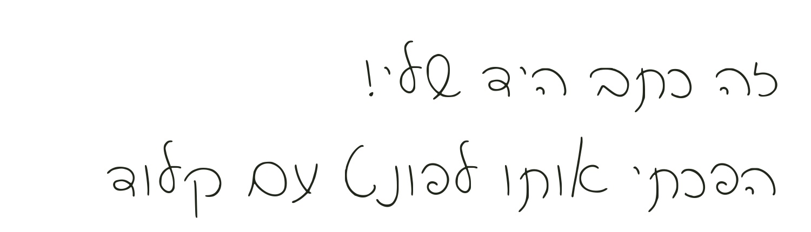
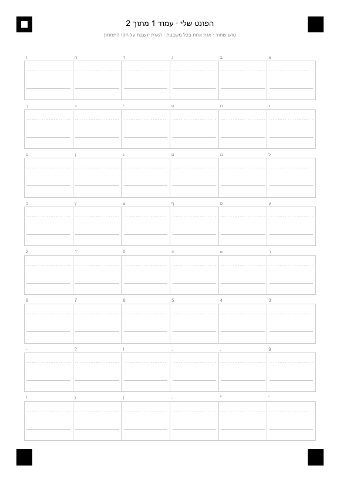

כתב היד שלכם,
כפונט במחשב
כותבים על דף, מצלמים בטלפון, ו-Claude בונה מזה פונט אמיתי. מתקינים אותו, ומקלידים בכתב היד שלכם, למשל בוורד ובקאפקאט.
💳 מה צריך: מנוי Claude Pro (או יותר), ודף עם כתב יד שמצלמים או סורקים. כל השאר חינמי ונשאר אצלכם במחשב.
פעם ראשונה עם Claude Code? עברו קודם על מדריך המתחילים שלי (20 דקות, בלי קוד), ואז חזרו לכאן.
למדריך המתחילים ←
איך זה עובד
ארבעה שלבים, ו-Claude מוביל אתכם בכולם
כותבים
בתבנית, או דף שכבר כתוב
מצלמים
בטלפון או בסורק
Claude בונה
מיישר, מרווח ושואל אתכם
מתקינים
ומקלידים בכתב היד
בוחרים דרך וכותבים
שתי דרכים, ושתיהן עובדות
א. תבנית עם משבצות

מדפיסים, וכותבים אות אחת בכל משבצת. Claude יודע בדיוק איזו אות נמצאת בכל משבצת, ולכן התוצאה הכי נקייה.
- ✔ כל האותיות, כולל ך ם ן ף ץ
- ✔ ספרות וסימני פיסוק
- ✔ עמוד שני באנגלית, אם רוצים
ב. מחברת, פנקס או מכתב
מצלמים דף שכבר כתוב בכתב היד, למשל מחברת, פנקס או מכתב ישן. Claude מוצא את האותיות לבד ומראה לכם מה מצא.
כדאי לדעת: דף רגיל כמעט אף פעם לא כולל את כל האותיות. Claude יגיד לכם מה חסר, ותכתבו רק את האותיות האלה על דף לבן.
איך כותבים כדי שייצא יפה
- טוש שחור או עט כהה ועבה. עט כחול דק יוצא חלש.
- כתב דפוס, אות ליד אות. אותיות שנוגעות זו בזו קשה להפריד.
- בתבנית: האות יושבת על הקו התחתון. ק, ך, ן, ף, ץ יורדות מתחתיו, ול' עולה למעלה.
- מכתב של מישהו אחר? רק באישור שלו. ולא משתמשים בזה כדי לחקות חתימה.
איך מצלמים
- מלמעלה, באור יום ובלי צל של הטלפון על הדף. לא צריך לצלם ישר לגמרי, Claude מיישר.
- בתבנית: כל ארבעת הריבועים השחורים שבפינות צריכים להיות בתמונה.
- שולחים את הצילום למחשב, למשל ב-AirDrop, בוואטסאפ או במייל. גם קבצי HEIC מהאייפון עובדים.
פותחים שיחה ומדביקים
Claude כבר ידריך אתכם משם
באפליקציית Claude עוברים למצב Code (האייקון </> למעלה), לוחצים New session ובוחרים ב-Select folder תיקייה חדשה, למשל "הפונט שלי". מעתיקים את הפרומפט ומדביקים.
מק או ווינדוס: מה ההבדל?
כמעט אין הבדל. הפרומפט זהה, וגם הכלים. ההבדל היחיד הוא בהתקנה הראשונה של Python:
- במק הוא בדרך כלל כבר מותקן. אם לא, יקפוץ חלון שמציע להתקין כלים למפתחים. מאשרים וממתינים כמה דקות.
- בווינדוס בדרך כלל צריך להתקין אותו, ו-Claude מתקין בעצמו. אם קופץ חלון שמבקש אישור, לוחצים Yes.
זה קורה פעם אחת בלבד. בפונט הבא מתחילים ישר מהצילום.
בודקים, מתקנים ונותנים שם
Claude מראה דוגמה ושואל אתכם
Claude מיישר את כל האותיות לאותו קו ומסדר את הרווחים ביניהן, בלי לשנות את הגודל שלהן. אחר כך הוא מראה לכם משפט לדוגמה ושואל אם זה מספיק טוב.
איור להמחשה. השיחה אצלכם תיראה קצת אחרת.
מתקינים ומקלידים
לחיצה כפולה, וזהו
Claude יפתח לכם את התיקייה, וקובץ הפונט (סיומת .ttf) יהיה מסומן בה.
🍎 מק
- לוחצים פעמיים על הקובץ
- נפתח חלון עם הפונט. לוחצים התקן
- סוגרים ופותחים מחדש את התוכנה שרוצים לכתוב בה
🪟 ווינדוס
- קליק ימני על הקובץ
- בוחרים התקן (או Install)
- סוגרים ופותחים מחדש את התוכנה שרוצים לכתוב בה
מה הפונט יודע, ומה לא
- לכל אות יש צורה אחת. אם כותבים אותה מילה פעמיים, היא תיראה זהה.
- כתב מחובר לא יתחבר בין האותיות. כתב דפוס יוצא הכי טוב.
- אנגלית תופיע רק אם מילאתם גם את העמוד השני של התבנית.
- רוצים לתקן משהו אחר כך? פותחים שיחה באותה תיקייה ומבקשים. הצילומים והכלים כבר שם.
זהו, אתם מקלידים בכתב היד שלכם ✍️
רוצים עוד פרומפטים ומדריכים כאלה?
לכל המדריכים והקורסים ←